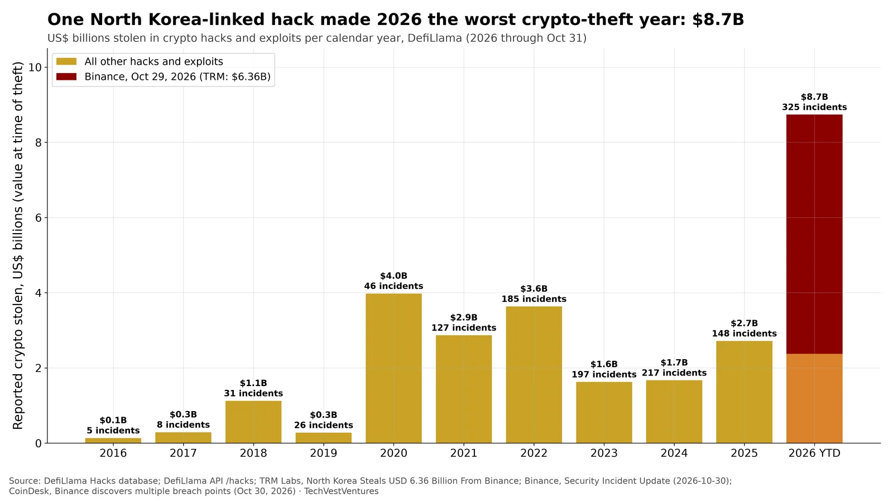
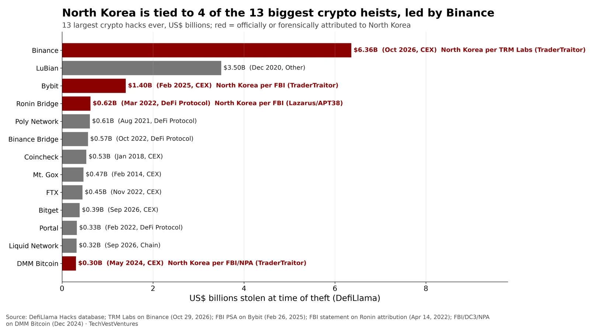

Q5. Crypto Heists

DefiLlama's hacks database records $8.7B stolen in 2026 through Oct 31, more than double the previous record (2020, $4.0B, inflated by the $3.5B LuBian theft). The Oct 29 Binance theft alone is $6.36B, which TRM Labs calls the largest crypto theft on record. TRM attributes it with high confidence to North Korea's TraderTraitor unit. Without Binance, 2026 would be $2.4B, slightly below 2025's $2.7B, so a single breach made the record. TRM counts about $2.7B of the Binance loot frozen by stablecoin issuers and Arbitrum, which DefiLlama's gross figure does not net out.
- Attack path (TRM): Binance hot-wallet signing infrastructure on 10 chains, plus 50 pre-signed EIP-7702 authorizations on Ethereum.
- Binance has not yet published a root cause. CoinDesk reports a compromised DevOps laptop and further breach points.
Note: Amounts are gross amounts stolen at the time of theft; recoveries, freezes and returns are not netted out. DefiLlama coverage before 2018 is thin.
Sources: DefiLlama Hacks database DefiLlama API /hacks TRM Labs, North Korea Steals USD 6.36 Billion From Binance Binance, Security Incident Update (2026-10-30) CoinDesk, Binance discovers multiple breach points (Oct 30, 2026)

The 13 largest crypto hacks in DefiLlama's database, valued at the time of theft. Red marks thefts officially attributed to North Korea: Binance 2026 (TRM Labs), Bybit 2025 (FBI), Ronin 2022 (FBI) and DMM Bitcoin 2024 (FBI with Japan's NPA). Together the four come to about $8.7B. Binance's $6.36B is 4.5x Bybit's $1.40B and 1.8x the next-largest, LuBian's $3.5B (2020). The others in the top 13 (LuBian, Poly Network, Coincheck, Mt. Gox, FTX and more) are not shown as attributed here. Centralized-exchange hot wallets, not DeFi code bugs, account for the biggest losses.
Note: Binance attribution is TRM's private-sector assessment (high confidence); as of Nov 1 we found no FBI statement. DefiLlama values Bybit at $1.40B; TRM and FBI cite about $1.5B.
Sources: DefiLlama Hacks database TRM Labs on Binance (Oct 29, 2026) FBI PSA on Bybit (Feb 26, 2025) FBI statement on Ronin attribution (Apr 14, 2022) FBI/DC3/NPA on DMM Bitcoin (Dec 2024)